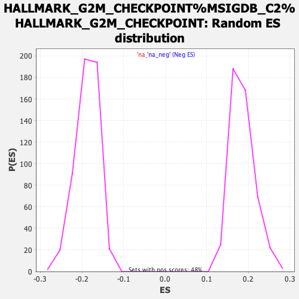

| | | Dataset | tel_exp_collapsed |
| Phenotype | NoPhenotypeAvailable |
| Upregulated in class | na_neg |
| GeneSet | HALLMARK_G2M_CHECKPOINT%MSIGDB_C2%HALLMARK_G2M_CHECKPOINT |
| Enrichment Score (ES) | -0.47432962 |
| Normalized Enrichment Score (NES) | -2.5217755 |
| Nominal p-value | 0.0 |
| FDR q-value | 0.0 |
| FWER p-Value | 0.0 |
Table: GSEA Results Summary
 Fig 1: Enrichment plot: HALLMARK_G2M_CHECKPOINT%MSIGDB_C2%HALLMARK_G2M_CHECKPOINT
Fig 1: Enrichment plot: HALLMARK_G2M_CHECKPOINT%MSIGDB_C2%HALLMARK_G2M_CHECKPOINT
Profile of the Running ES Score & Positions of GeneSet Members on the Rank Ordered List
| PROBE | GENE SYMBOL | GENE_TITLE | RANK IN GENE LIST | RANK METRIC SCORE | RUNNING ES | CORE ENRICHMENT | | 1 | MT2A | | | 13 | 18.611 | 0.0121 | No |
| 2 | TRA2B | | | 237 | 13.969 | 0.0067 | No |
| 3 | HIST1H2BK | | | 268 | 13.724 | 0.0143 | No |
| 4 | HMGN2 | | | 484 | 12.423 | 0.0084 | No |
| 5 | HNRNPD | | | 595 | 11.880 | 0.0092 | No |
| 6 | HMGA1 | | | 735 | 11.336 | 0.0077 | No |
| 7 | BCL3 | | | 760 | 11.230 | 0.0139 | No |
| 8 | H2AFX | | | 1006 | 10.527 | 0.0046 | No |
| 9 | CDK4 | | | 1030 | 10.486 | 0.0104 | No |
| 10 | MCM5 | | | 1268 | 9.907 | 0.0012 | No |
| 11 | SRSF2 | | | 1359 | 9.689 | 0.0018 | No |
| 12 | HNRNPU | | | 1383 | 9.638 | 0.0070 | No |
| 13 | MYC | | | 1580 | 9.187 | 0.0001 | No |
| 14 | NCL | | | 1714 | 8.919 | -0.0027 | No |
| 15 | PRMT5 | | | 2242 | 8.063 | -0.0329 | No |
| 16 | GINS2 | | | 3072 | 6.851 | -0.0844 | No |
| 17 | EWSR1 | | | 3146 | 6.733 | -0.0847 | No |
| 18 | MEIS2 | | | 3170 | 6.701 | -0.0816 | No |
| 19 | GSPT1 | | | 3462 | 6.258 | -0.0970 | No |
| 20 | MYBL2 | | | 3698 | 5.900 | -0.1088 | No |
| 21 | NOLC1 | | | 4050 | 5.354 | -0.1289 | No |
| 22 | RAD23B | | | 4089 | 5.271 | -0.1278 | No |
| 23 | CDKN1B | | | 4118 | 5.212 | -0.1261 | No |
| 24 | HUS1 | | | 4182 | 5.092 | -0.1268 | No |
| 25 | SMARCC1 | | | 4327 | 4.838 | -0.1332 | No |
| 26 | TGFB1 | | | 4408 | 4.725 | -0.1354 | No |
| 27 | HOXC10 | | | 4422 | 4.707 | -0.1329 | No |
| 28 | ODC1 | | | 4601 | 4.421 | -0.1420 | No |
| 29 | SFPQ | | | 4717 | 4.208 | -0.1468 | No |
| 30 | SLC12A2 | | | 4823 | 3.966 | -0.1512 | No |
| 31 | MNAT1 | | | 4838 | 3.942 | -0.1494 | No |
| 32 | SAP30 | | | 5293 | 3.100 | -0.1781 | No |
| 33 | STMN1 | | | 5536 | 2.663 | -0.1927 | No |
| 34 | DMD | | | 5542 | 2.655 | -0.1912 | No |
| 35 | CDC45 | | | 5558 | 2.609 | -0.1904 | No |
| 36 | PTTG1 | | | 5595 | 2.559 | -0.1910 | No |
| 37 | STAG1 | | | 5715 | 2.327 | -0.1975 | No |
| 38 | ODF2 | | | 5789 | 2.206 | -0.2009 | No |
| 39 | DDX39A | | | 5793 | 2.200 | -0.1996 | No |
| 40 | CKS1B | | | 5851 | 2.085 | -0.2020 | No |
| 41 | HIF1A | | | 5953 | 1.888 | -0.2075 | No |
| 42 | MARCKS | | | 6031 | 1.750 | -0.2115 | No |
| 43 | CASP8AP2 | | | 6203 | 1.505 | -0.2221 | No |
| 44 | CDKN3 | | | 6413 | 1.156 | -0.2355 | No |
| 45 | E2F3 | | | 6745 | 0.671 | -0.2575 | No |
| 46 | RBM14 | | | 6971 | 0.396 | -0.2725 | No |
| 47 | CDC20 | | | 7029 | 0.339 | -0.2762 | No |
| 48 | PRIM2 | | | 7101 | 0.259 | -0.2808 | No |
| 49 | MCM3 | | | 7108 | 0.252 | -0.2811 | No |
| 50 | MCM6 | | | 7150 | 0.218 | -0.2837 | No |
| 51 | PURA | | | 7155 | 0.213 | -0.2838 | No |
| 52 | NASP | | | 7316 | 0.064 | -0.2947 | No |
| 53 | TFDP1 | | | 7527 | -0.091 | -0.3089 | No |
| 54 | DKC1 | | | 7578 | -0.131 | -0.3122 | No |
| 55 | EZH2 | | | 7721 | -0.242 | -0.3217 | No |
| 56 | EGF | | | 7780 | -0.301 | -0.3254 | No |
| 57 | TOP1 | | | 7862 | -0.380 | -0.3306 | No |
| 58 | SMC1A | | | 7951 | -0.479 | -0.3363 | No |
| 59 | H2AFZ | | | 8235 | -0.886 | -0.3549 | No |
| 60 | LIG3 | | | 8481 | -1.269 | -0.3707 | No |
| 61 | CUL1 | | | 8495 | -1.286 | -0.3706 | No |
| 62 | KATNA1 | | | 8517 | -1.326 | -0.3711 | No |
| 63 | DR1 | | | 8632 | -1.482 | -0.3779 | No |
| 64 | CCND1 | | | 8776 | -1.710 | -0.3864 | No |
| 65 | YTHDC1 | | | 8840 | -1.821 | -0.3894 | No |
| 66 | CUL4A | | | 8844 | -1.827 | -0.3883 | No |
| 67 | ATF5 | | | 8943 | -2.030 | -0.3936 | No |
| 68 | UBE2S | | | 9055 | -2.215 | -0.3996 | No |
| 69 | CHEK1 | | | 9085 | -2.272 | -0.3999 | No |
| 70 | RAD54L | | | 9132 | -2.349 | -0.4014 | No |
| 71 | SMC2 | | | 9398 | -2.840 | -0.4175 | No |
| 72 | TROAP | | | 9436 | -2.909 | -0.4179 | No |
| 73 | E2F1 | | | 9596 | -3.191 | -0.4265 | No |
| 74 | ILF3 | | | 9697 | -3.405 | -0.4309 | No |
| 75 | WRN | | | 9739 | -3.460 | -0.4313 | No |
| 76 | ATRX | | | 9852 | -3.672 | -0.4363 | No |
| 77 | UCK2 | | | 9864 | -3.686 | -0.4345 | No |
| 78 | HIRA | | | 9887 | -3.733 | -0.4334 | No |
| 79 | DBF4 | | | 9996 | -3.944 | -0.4380 | No |
| 80 | DTYMK | | | 10005 | -3.959 | -0.4358 | No |
| 81 | PDS5B | | | 10112 | -4.154 | -0.4401 | No |
| 82 | SNRPD1 | | | 10255 | -4.373 | -0.4467 | No |
| 83 | TACC3 | | | 10278 | -4.406 | -0.4451 | No |
| 84 | EXO1 | | | 10457 | -4.729 | -0.4539 | No |
| 85 | ARID4A | | | 10500 | -4.825 | -0.4533 | No |
| 86 | MEIS1 | | | 10619 | -5.020 | -0.4579 | No |
| 87 | E2F4 | | | 10627 | -5.030 | -0.4548 | No |
| 88 | KPNB1 | | | 10696 | -5.137 | -0.4558 | No |
| 89 | FOXN3 | | | 10755 | -5.225 | -0.4561 | No |
| 90 | CHAF1A | | | 10797 | -5.287 | -0.4552 | No |
| 91 | NUP98 | | | 10868 | -5.409 | -0.4562 | No |
| 92 | H2AFV | | | 10883 | -5.435 | -0.4533 | No |
| 93 | CDC6 | | | 10900 | -5.466 | -0.4506 | No |
| 94 | RAD21 | | | 10960 | -5.551 | -0.4507 | No |
| 95 | KIF4A | | | 11023 | -5.652 | -0.4510 | No |
| 96 | ORC5 | | | 11046 | -5.706 | -0.4485 | No |
| 97 | CBX1 | | | 11159 | -5.937 | -0.4520 | No |
| 98 | KIF22 | | | 11308 | -6.189 | -0.4577 | No |
| 99 | EFNA5 | | | 11320 | -6.214 | -0.4541 | No |
| 100 | CDC25B | | | 11374 | -6.273 | -0.4533 | No |
| 101 | BARD1 | | | 11684 | -6.848 | -0.4695 | Yes |
| 102 | PAFAH1B1 | | | 11718 | -6.917 | -0.4669 | Yes |
| 103 | SYNCRIP | | | 11724 | -6.933 | -0.4624 | Yes |
| 104 | SRSF1 | | | 11726 | -6.942 | -0.4577 | Yes |
| 105 | SMAD3 | | | 11845 | -7.139 | -0.4607 | Yes |
| 106 | XPO1 | | | 12034 | -7.465 | -0.4682 | Yes |
| 107 | HMGB3 | | | 12086 | -7.547 | -0.4664 | Yes |
| 108 | BUB3 | | | 12130 | -7.617 | -0.4640 | Yes |
| 109 | SRSF10 | | | 12133 | -7.620 | -0.4588 | Yes |
| 110 | RASAL2 | | | 12238 | -7.792 | -0.4605 | Yes |
| 111 | FANCC | | | 12255 | -7.810 | -0.4561 | Yes |
| 112 | MAD2L1 | | | 12405 | -8.055 | -0.4606 | Yes |
| 113 | LMNB1 | | | 12432 | -8.087 | -0.4567 | Yes |
| 114 | CCNB2 | | | 12439 | -8.091 | -0.4514 | Yes |
| 115 | RPS6KA5 | | | 12447 | -8.104 | -0.4463 | Yes |
| 116 | PML | | | 12571 | -8.309 | -0.4488 | Yes |
| 117 | MCM2 | | | 12577 | -8.325 | -0.4433 | Yes |
| 118 | SLC38A1 | | | 12587 | -8.343 | -0.4381 | Yes |
| 119 | G3BP1 | | | 12646 | -8.453 | -0.4361 | Yes |
| 120 | ABL1 | | | 12672 | -8.500 | -0.4319 | Yes |
| 121 | NEK2 | | | 12775 | -8.683 | -0.4328 | Yes |
| 122 | TMPO | | | 12791 | -8.710 | -0.4277 | Yes |
| 123 | KIF5B | | | 12922 | -8.940 | -0.4303 | Yes |
| 124 | CUL5 | | | 13036 | -9.149 | -0.4316 | Yes |
| 125 | PBK | | | 13038 | -9.149 | -0.4252 | Yes |
| 126 | CDC7 | | | 13069 | -9.201 | -0.4208 | Yes |
| 127 | NOTCH2 | | | 13095 | -9.231 | -0.4161 | Yes |
| 128 | KPNA2 | | | 13174 | -9.344 | -0.4148 | Yes |
| 129 | MKI67 | | | 13236 | -9.467 | -0.4124 | Yes |
| 130 | BIRC5 | | | 13253 | -9.494 | -0.4068 | Yes |
| 131 | ESPL1 | | | 13262 | -9.507 | -0.4007 | Yes |
| 132 | SLC7A5 | | | 13289 | -9.553 | -0.3958 | Yes |
| 133 | BUB1 | | | 13305 | -9.578 | -0.3901 | Yes |
| 134 | CDKN2C | | | 13318 | -9.609 | -0.3842 | Yes |
| 135 | CTCF | | | 13323 | -9.620 | -0.3778 | Yes |
| 136 | SMC4 | | | 13365 | -9.704 | -0.3738 | Yes |
| 137 | MAPK14 | | | 13437 | -9.872 | -0.3717 | Yes |
| 138 | BRCA2 | | | 13447 | -9.896 | -0.3654 | Yes |
| 139 | HSPA8 | | | 13489 | -9.970 | -0.3612 | Yes |
| 140 | PLK1 | | | 13494 | -9.987 | -0.3545 | Yes |
| 141 | AURKB | | | 13550 | -10.076 | -0.3512 | Yes |
| 142 | POLE | | | 13556 | -10.086 | -0.3445 | Yes |
| 143 | RBL1 | | | 13615 | -10.170 | -0.3413 | Yes |
| 144 | KIF15 | | | 13687 | -10.286 | -0.3389 | Yes |
| 145 | NUMA1 | | | 13690 | -10.291 | -0.3319 | Yes |
| 146 | RPA2 | | | 13705 | -10.321 | -0.3256 | Yes |
| 147 | NUP50 | | | 13754 | -10.421 | -0.3216 | Yes |
| 148 | TRAIP | | | 13870 | -10.694 | -0.3219 | Yes |
| 149 | CUL3 | | | 13941 | -10.833 | -0.3191 | Yes |
| 150 | ORC6 | | | 14029 | -11.028 | -0.3173 | Yes |
| 151 | TPX2 | | | 14053 | -11.080 | -0.3111 | Yes |
| 152 | NDC80 | | | 14132 | -11.276 | -0.3085 | Yes |
| 153 | CKS2 | | | 14133 | -11.278 | -0.3007 | Yes |
| 154 | POLQ | | | 14143 | -11.300 | -0.2934 | Yes |
| 155 | SQLE | | | 14172 | -11.361 | -0.2873 | Yes |
| 156 | FBXO5 | | | 14226 | -11.511 | -0.2829 | Yes |
| 157 | CDC27 | | | 14262 | -11.595 | -0.2772 | Yes |
| 158 | PLK4 | | | 14302 | -11.714 | -0.2716 | Yes |
| 159 | SLC7A1 | | | 14348 | -11.851 | -0.2664 | Yes |
| 160 | RACGAP1 | | | 14377 | -11.933 | -0.2600 | Yes |
| 161 | PRC1 | | | 14435 | -12.110 | -0.2554 | Yes |
| 162 | E2F2 | | | 14485 | -12.252 | -0.2501 | Yes |
| 163 | TLE3 | | | 14494 | -12.279 | -0.2421 | Yes |
| 164 | TTK | | | 14499 | -12.287 | -0.2338 | Yes |
| 165 | CCNA2 | | | 14505 | -12.309 | -0.2255 | Yes |
| 166 | POLA2 | | | 14542 | -12.404 | -0.2193 | Yes |
| 167 | CENPF | | | 14561 | -12.477 | -0.2118 | Yes |
| 168 | CENPE | | | 14576 | -12.526 | -0.2040 | Yes |
| 169 | MTF2 | | | 14580 | -12.553 | -0.1954 | Yes |
| 170 | STIL | | | 14611 | -12.658 | -0.1886 | Yes |
| 171 | NUSAP1 | | | 14667 | -13.000 | -0.1832 | Yes |
| 172 | CENPA | | | 14668 | -13.006 | -0.1741 | Yes |
| 173 | KIF20B | | | 14674 | -13.038 | -0.1654 | Yes |
| 174 | HMMR | | | 14683 | -13.131 | -0.1567 | Yes |
| 175 | PRPF4B | | | 14684 | -13.133 | -0.1475 | Yes |
| 176 | LBR | | | 14688 | -13.157 | -0.1385 | Yes |
| 177 | UBE2C | | | 14756 | -13.537 | -0.1336 | Yes |
| 178 | AURKA | | | 14782 | -13.714 | -0.1257 | Yes |
| 179 | CHMP1A | | | 14788 | -13.775 | -0.1164 | Yes |
| 180 | KIF11 | | | 14789 | -13.791 | -0.1068 | Yes |
| 181 | UPF1 | | | 14794 | -13.853 | -0.0974 | Yes |
| 182 | CDK1 | | | 14800 | -13.907 | -0.0880 | Yes |
| 183 | INCENP | | | 14801 | -13.927 | -0.0783 | Yes |
| 184 | AMD1 | | | 14820 | -14.121 | -0.0696 | Yes |
| 185 | SUV39H1 | | | 14830 | -14.282 | -0.0602 | Yes |
| 186 | CDC25A | | | 14849 | -14.471 | -0.0513 | Yes |
| 187 | TNPO2 | | | 14870 | -14.966 | -0.0422 | Yes |
| 188 | CCNF | | | 14872 | -15.031 | -0.0318 | Yes |
| 189 | CCNT1 | | | 14889 | -15.638 | -0.0220 | Yes |
| 190 | TOP2A | | | 14897 | -15.957 | -0.0113 | Yes |
| 191 | KIF2C | | | 14900 | -16.409 | 0.0001 | Yes |
Table: GSEA details [plain text format]

Fig 2: HALLMARK_G2M_CHECKPOINT%MSIGDB_C2%HALLMARK_G2M_CHECKPOINT: Random ES distribution
Gene set null distribution of ES for HALLMARK_G2M_CHECKPOINT%MSIGDB_C2%HALLMARK_G2M_CHECKPOINT